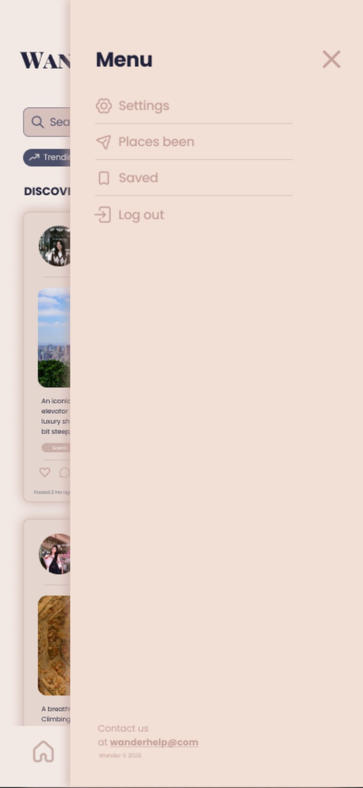

A side menu modeled on patterns people already know
The hardest structural question was what belonged in the pull-out side menu: which pages, which actions, and how much account information. I looked to Instagram, since our users already know its patterns, and split navigation into two layers. The bottom tab bar holds the five things people do most: Home, Trips, Post, Map, and Profile. The side menu holds secondary and account items: Settings, Places been, Saved, Log out, and a contact line. That kept the main screen focused on content.
